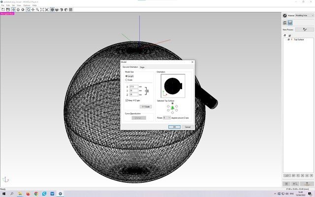
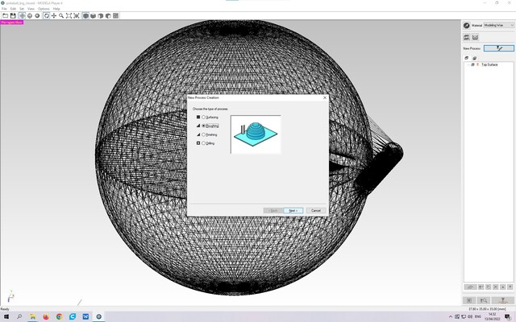
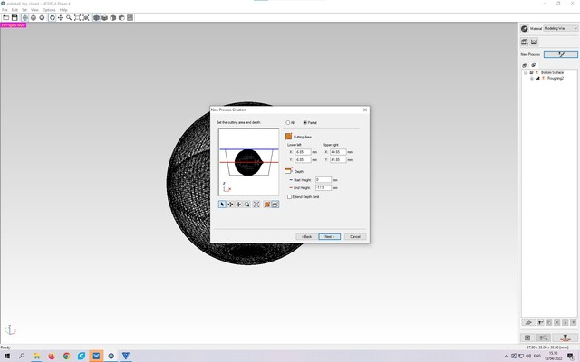
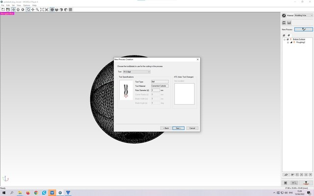
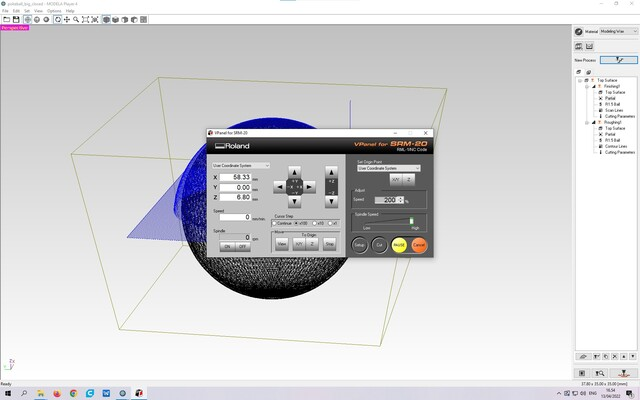

15. Molding and Casting
Assignment
Individual assignment
- Design a mold around the stock and tooling that you'll be using, mill it (rough cut + three-axis finish cut), and use it to cast parts
Group assignment
- Review the safety data sheets for each of your molding and casting materials, then make and compare test casts with each of them
Making Pokeball
As a casting exercise, I made a plastic mold and casted a Pokemon ball that I had previously designed as a 3D printing exercise.
The process went through the following steps:
- I milled a wax mold from a 3D model of a Pokemon ball
- I made a silicone mold into a wax mold
- I made a plastic cast into a silicone mold
Making a wax mold
I made the wax mold with a Roland monoFab SRM-20 milling machine using Roland MODELA Player 4 application. I imported into the MODELA Player 4 a previously designed Pokemon ball that was in .stl format. The Pokemon ball was in its closed position, so it was completely ball shaped except for the hinges. The size of the ball was reduced to about 35mm in diameter. Due to the shape of the object, I had to create two molds - a top and a bottom. The application knew how to make two molds directly from the model, so I created "Top Surface" and "Bottom Surface" with it. To each of these Surfaces I added the "Roughing" and "Finishing" processes, which are practically milling toolpaths. The roughing process mills the mold shapes and finishing is for surface finishing. As a milling tool, I defined and used a 3mm ball mill for each process. This was a slightly poor choice because the mill in question could not cut the edges quite straight from the bottom of the mold due to the ball shape of the mill, resulting in a casting seam about 1mm high into the final ball.
|  |
|---|
| Resize Pokemon ball |
In creating the process, I changed the "Set the cutting area and depth" setting to "Partial" and divided the "Depth" by two. The 3D model is an entire ball, but the mold is only half of it. I selected "Modeling Wax" and the tool "R1.5 Ball" as the material, based on which the program selected the appropriate milling settings. Used material and tool definitions were made by someone else on our FabLab for that machine.
|  |
|---|
| Create milling process |
|  |
|---|
| Select half of ball |
|  |
|---|
| Select 3mm ball milling bit |
MODELA Player 4 created 4 toolpaths for SRM-20 milling machine, "Roughing" and "Finishing" for both the top and bottom of the ball from the above definitions.
I covered the milling machine bed with masking tape and glued the wax mold with hot glue to that tape. The tape is used for protecting the bed from glue splashes.
I used the VPanel for SRM-20 program to drive the cutter. I installed the specified mill bit on the milling machine and calibrated the X/Y/Z origin. I loaded the toolpaths made in MODELA Player 4 into the VPanel app and first milled the other half of the ball into the wax mold. I recalibrated the origin and milled the other half of the ball next to the previous one.
|  |
|---|
| Mill wax mold using VPanel for SRM-20 |
Final thoughts
Hello World.